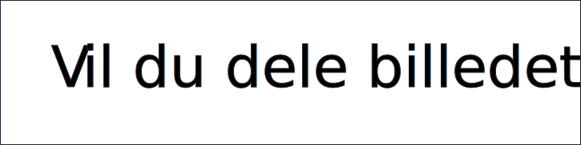
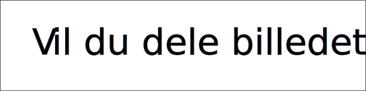

Storyboard & flowchart

Malou Vincents, Mahnaz Hashemi, Magnus Stampe Nielsen, Laura Sommer
Historien tager udgangspunkt i en plausibel hverdagshistorie, og behandler problematikken omkring billeddeling på de sociale medier. Personerne i historien bruger Snapchat, hvilket også er meget populært hos målgruppen. Vi får brugeren til at tage et etisk valg når vedkommende får sendt et nøgenbillede af en pige i et boblebad. Hvis brugeren vælger at dele billedet, vil han/hun kunne klikke på en række personer, som vil modtage det. Får brugeren kolde fødder og klikker ikke på nogen alligevel, leder spillet til samme slutning, som hvis han/hun havde valgt ikke at dele billedet i første omgang. Ellers deles billedet, og man ser pigens billede sprede sig. Begge slutninger leder til, at brugeren får at vide, at den slags billeddeling i realiteten er ulovlig.
Navn: Anton
Alder: 15
Beskæftigelser: Folkeskoleelev, gituar og kor
Famileforhold: Skildsfamilie, bor sammen med mor. Har en halvsøster
Bopæl: Østerbro
Beskrivelse: Klare sig godt i skolen og er glad for matematik og økonomi. Er musikalsk anlagt og har privatundervisning til guitar. Anton er social anlagt og bruger tid med venner både i skole og fritid. Vil gerne ud og rejseog se verden, mere specifikt vil han gerne prøve at bjergklatre.

Navn: Helena
Alder: 15
Beskæftigelser: Folkeskoleelev og ridepige
Famileforhold: Bor sammen med begge forældre. Har også en halvbror
Bopæl: Bor i et hus i Valby
Beskrivelse: I skolen klare hun det godt i matematik. Kan lide at uddybe sig og bruge lang tid på de lektier hun får i skolen. Nyder også at værekreativ i sin fritid, hvor hun tegner m.m. Føler sig lidt holdt ude fra det sociale i klassen.


Baggrund 1

Baggrund 2

Baggrund 3, JA, NEJ

Pige
Modtager


 
